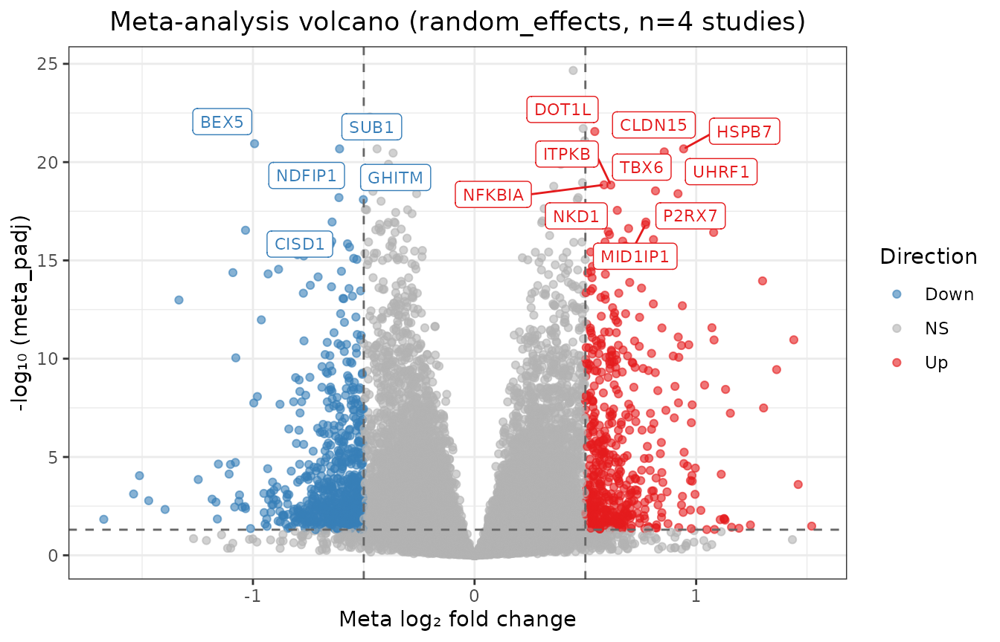
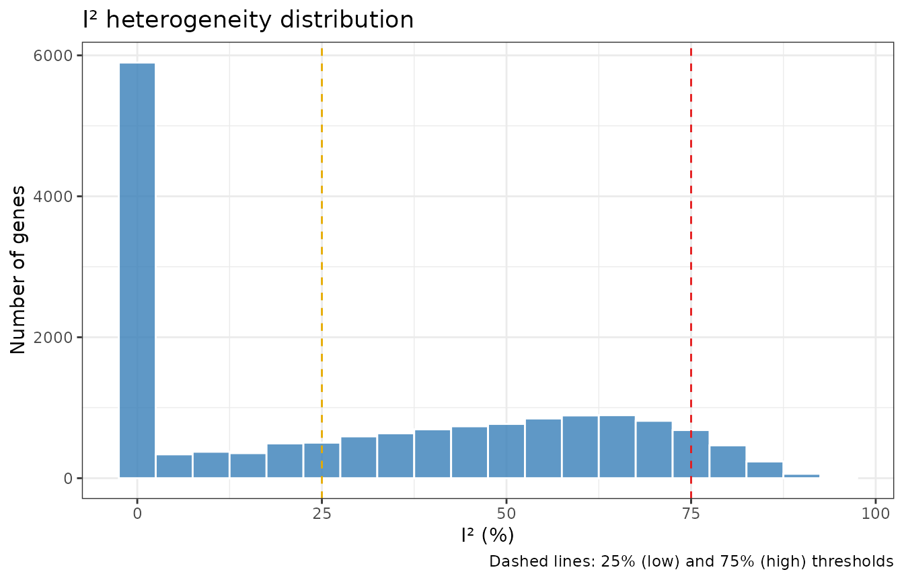
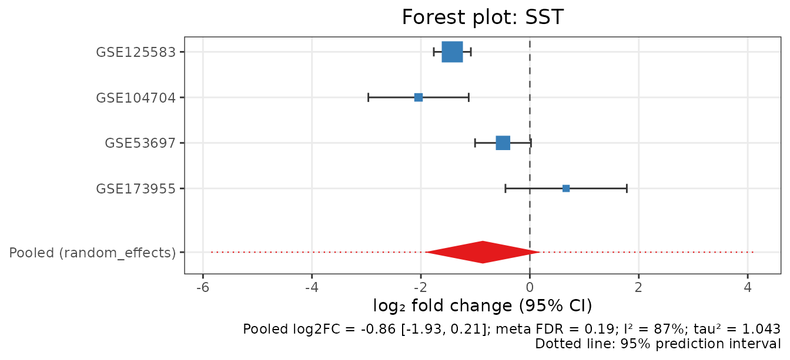
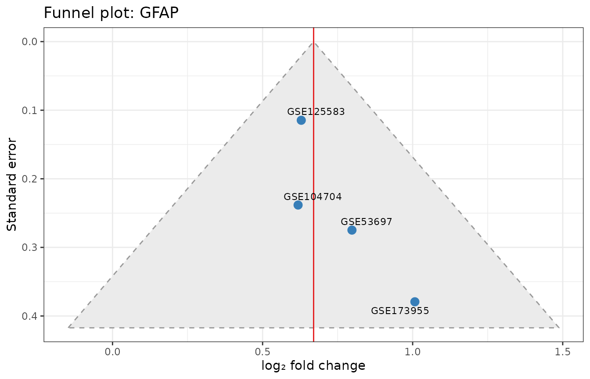
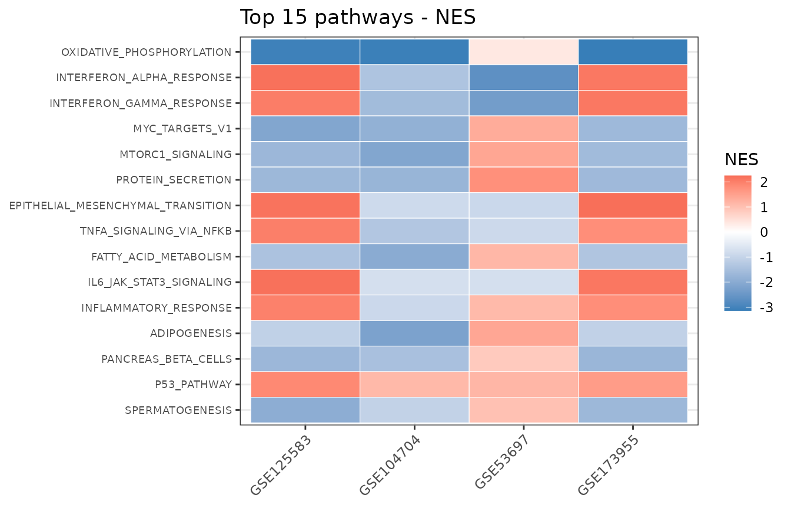

Case study: Alzheimer's disease brain meta-analysis
Md. Jubayer Hossain
2026-10-14
Source:vignettes/case_study.Rmd
case_study.RmdThis vignette is a complete, executable meta-analysis of published bulk RNA-seq data. It walks through the decisions a reviewer will ask about: study selection, independence, model choice, heterogeneity, robustness and pathway inference. Every number below is computed when the vignette is built.
1. Question and study selection
Question: which genes are consistently differentially expressed in Alzheimer’s disease (AD) brain tissue compared with age-matched controls, across brain regions and cohorts?
The candidates were human post-mortem brain bulk RNA-seq series in GEO with an AD vs non-demented control design and raw counts from the NCBI GEO RNA-seq pipeline. These four were included:
| GEO | Region | AD | Control | Notes |
|---|---|---|---|---|
| GSE125583 | Fusiform gyrus | 218 | 70 | Adjusted for sex |
| GSE104704 | Lateral temporal lobe | 12 | 10 | Aged controls only; young controls excluded |
| GSE53697 | Dorsolateral PFC | 6 | 6 | NCBI processed 12 of 17 libraries |
| GSE173955 | Hippocampus | 8 | 10 |
These two were excluded because their donors overlap with included studies, which would count the same individuals twice:
- GSE95587 (fusiform gyrus): 89 of its 117 case IDs also appear in GSE125583.
- GSE159699 (lateral temporal lobe): the same brain-bank donors as GSE104704.
Meta-analysis assumes the studies are independent. Checking donor and case identifiers across series from the same lab or brain bank is essential.
How the per-study results were produced
The per-study DESeq2 results are shipped with the package. They were
built by inst/scripts/make_ad_brain_extdata.R, which
runs:
studies <- mx_fetch_geo(
c("GSE125583", "GSE104704", "GSE53697", "GSE173955"),
condition_col = c(GSE125583 = "diagnosis:ch1",
GSE104704 = "study group:ch1",
GSE53697 = "disease status:ch1",
GSE173955 = "title"))
# ... keep AD and control samples, protein-coding genes,
# >= 10 counts in >= (smaller group size) samples ...
studies <- mx_de_all(
studies, method = "DESeq2",
formula = list(~ sex + condition, ~ condition, ~ condition, ~ condition),
contrast = list(c("Alzheimer's disease", "control"),
c("Aged, diseased", "Old"),
c("advanced Alzheimer's Disease", "control"),
c("Alzheimer's Disease", "non-Alzheimer's Disease")))Three choices in this code matter:
-
mx_fetch_geo()downloads NCBI-generated raw counts: one HISAT2 and featureCounts pipeline on GRCh38 for every study. This removes the aligner and annotation differences that usually add technical heterogeneity between published count tables. -
contrastis set per study because GEO labels differ (“control”, “Old”, “non-Alzheimer’s Disease”). Every fold change is AD / control. - Batch correction is not applied. Each study is analysed separately, so between-study batch effects never enter the fold changes.
ad <- readRDS(system.file("extdata", "ad_brain_de.rds",
package = "metaXpress"))
de <- ad$de_results
ad$studies
#> accession region n_AD n_control n_genes n_DEG_fdr05
#> 1 GSE125583 Fusiform gyrus 218 70 16126 10164
#> 2 GSE104704 Lateral temporal lobe 12 10 15930 1670
#> 3 GSE53697 Dorsolateral PFC 6 6 16029 1
#> 4 GSE173955 Hippocampus 8 10 15905 4149
#> formula
#> 1 ~sex + condition
#> 2 ~condition
#> 3 ~condition
#> 4 ~condition
str(ad$provenance)
#> List of 5
#> $ built : chr "2026-10-14"
#> $ counts : chr "NCBI GEO RNA-seq pipeline, GRCh38.p13, NCBI RefSeq genes"
#> $ de : chr "DESeq2 1.52.0 Wald test, unshrunken MLE log2FC"
#> $ filter : chr "protein-coding; >= 10 counts in >= smaller-group-size samples"
#> $ metaXpress: chr "0.99.1"2. Pre-pooling checks
Direction and concordance
mx_study_concordance(de)
#> study_1 study_2 n_genes correlation sign_agreement flag
#> 1 GSE125583 GSE104704 10096 0.75221718 0.8502377 ok
#> 2 GSE125583 GSE53697 9841 0.09469926 0.5314501 weak concordance
#> 3 GSE125583 GSE173955 10722 0.80043218 0.8740907 ok
#> 4 GSE104704 GSE53697 1654 0.38697724 0.6813785 ok
#> 5 GSE104704 GSE173955 5062 0.67807809 0.8609245 ok
#> 6 GSE53697 GSE173955 4078 0.29992966 0.6066699 okNo study pair is negatively correlated, so the contrasts are oriented consistently. Concordance between the three larger cohorts is high. The dorsolateral PFC study (6 vs 6) correlates weakly with the others, which is expected for a small study of a less affected region.
Gene coverage
Genes removed by the expression filter in a study are treated as
not measured in that study, not as zero effects.
mx_meta() pools each gene over the studies that measured
it, and n_studies records how many that was.
cov <- mx_missing_summary(de)
colSums(cov) # genes measured per study
#> GSE125583 GSE104704 GSE53697 GSE173955
#> 16126 15930 16029 15905
table(studies_measured = rowSums(cov)) # genes by number of studies
#> studies_measured
#> 1 2 3 4
#> 427 601 399 15291Imputing missing fold changes from the other studies is circular: it inflates the apparent number of studies and deflates I². It is not used here.
3. Choosing the model
The aim is to estimate the average AD effect across regions and cohorts, which are expected to differ. That makes a random-effects model the appropriate a-priori choice. tau² is estimated by REML, which is less biased than DerSimonian-Laird (Veroniki et al. 2016; Langan et al. 2019).
res <- mx_meta(de, method = "random_effects", tau_method = "REML")
res
#> metaXpressResult
#> Method : random_effects
#> Studies : 4
#> Genes : 16290
#> Sig genes : 7491 (meta_padj <= 0.05)
mt <- res@meta_tableOther methods answer different questions, so they are not alternatives to try until something comes out significant:
n_sig <- function(...) sum(mx_meta(de, ...)@meta_table$meta_padj <= 0.05)
data.frame(
method = c("random_effects (REML)", "fixed_effects",
"inverse_normal (sqrt n)", "fisher (directional)",
"rop (r = 2 of 4)", "maxp (all 4)", "awmeta"),
question = c("average effect across populations",
"one common effect (studies are replicates)",
"signed evidence, weighted by sample size",
"same-direction effect in at least one study",
"DE in at least 2 studies",
"DE in every study",
"AW-Fisher: DE in an adaptively selected subset"),
n_FDR05 = c(n_sig(method = "random_effects"),
n_sig(method = "fixed_effects"),
n_sig(method = "inverse_normal"),
n_sig(method = "fisher"),
n_sig(method = "rop", r = 2),
n_sig(method = "maxp"),
if (requireNamespace("AWFisher", quietly = TRUE))
n_sig(method = "awmeta") else NA))
#> method question
#> 1 random_effects (REML) average effect across populations
#> 2 fixed_effects one common effect (studies are replicates)
#> 3 inverse_normal (sqrt n) signed evidence, weighted by sample size
#> 4 fisher (directional) same-direction effect in at least one study
#> 5 rop (r = 2 of 4) DE in at least 2 studies
#> 6 maxp (all 4) DE in every study
#> 7 awmeta AW-Fisher: DE in an adaptively selected subset
#> n_FDR05
#> 1 7491
#> 2 10861
#> 3 10906
#> 4 10699
#> 5 7615
#> 6 1622
#> 7 10284The fixed-effect and p-value methods call more genes because they ignore between-study variance. With one cohort of n = 288, they mostly reflect that cohort.
A note on the Hartung-Knapp-Sidik-Jonkman (HKSJ) adjustment
HKSJ gives better-calibrated confidence intervals when few studies are pooled, and is widely recommended for clinical meta-analysis (IntHout et al. 2014). With k = 4 studies, though, it uses a t distribution with 3 degrees of freedom:
hk <- mx_meta(de, tau_method = "REML", hksj = TRUE)@meta_table
c(min_p = min(hk$meta_pvalue),
BH_threshold_for_one_hit = 0.05 / nrow(hk),
n_FDR05 = sum(hk$meta_padj <= 0.05))
#> min_p BH_threshold_for_one_hit n_FDR05
#> 1.323737e-05 3.069368e-06 0.000000e+00Even a gene with perfectly consistent effects reaches only p ≈ 1e-5. That cannot pass genome-wide FDR control over about 16,000 genes. With few studies, use HKSJ for per-gene confidence intervals of prioritised genes, not for genome-wide discovery.
4. Results
sig <- mt$meta_padj <= 0.05
c(tested = nrow(mt), significant = sum(sig),
up = sum(sig & mt$meta_log2FC > 0), down = sum(sig & mt$meta_log2FC < 0),
pi_excludes_zero = sum(sig & (mt$pi_lower > 0 | mt$pi_upper < 0),
na.rm = TRUE))
#> tested significant up down
#> 16290 7491 3585 3906
#> pi_excludes_zero
#> 2133The last number counts significant genes whose 95% prediction interval excludes zero. For these genes, a new cohort is expected to show the same direction of change. They are the most transferable part of the signature.
mx_volcano(res, padj_threshold = 0.05, lfc_threshold = 0.5, label_top = 15)

Known AD biology
known <- c("GFAP", "C4B", "CD44", "VIP", "VGF", "BDNF", "CRH", "NPTX2",
"SST", "PVALB")
k_tab <- mt[match(known, mt$gene_id),
c("gene_id", "meta_log2FC", "ci_lower", "ci_upper", "meta_padj",
"i_squared", "pi_lower", "pi_upper")]
k_tab[, -1] <- signif(k_tab[, -1], 3)
k_tab
#> gene_id meta_log2FC ci_lower ci_upper meta_padj i_squared pi_lower
#> 12616 GFAP 0.670 0.486 0.854 3.60e-11 0.0 0.26700
#> 5158 C4B 0.438 0.235 0.641 1.43e-04 31.0 -0.00815
#> 8528 CD44 0.483 0.119 0.846 2.35e-02 38.2 -0.54400
#> 5678 VIP -0.609 -0.807 -0.411 2.78e-08 0.0 -1.04000
#> 6220 VGF -1.470 -2.290 -0.656 1.67e-03 86.5 -5.19000
#> 8497 BDNF -0.847 -1.300 -0.392 1.15e-03 73.4 -2.80000
#> 6741 CRH -1.540 -2.340 -0.739 7.63e-04 76.5 -5.05000
#> 6150 NPTX2 -1.040 -1.650 -0.424 3.33e-03 78.5 -3.75000
#> 3544 SST -0.864 -1.930 0.206 1.87e-01 86.7 -5.85000
#> 15156 PVALB -0.782 -1.970 0.404 2.91e-01 87.9 -6.31000
#> pi_upper
#> 12616 1.070
#> 5158 0.883
#> 8528 1.510
#> 5678 -0.175
#> 6220 2.250
#> 8497 1.110
#> 6741 1.970
#> 6150 1.680
#> 3544 4.120
#> 15156 4.740The meta-analysis recovers the expected pattern:
- Up: reactive glial and complement genes (GFAP, C4B, CD44).
- Down: neuronal and neuropeptide genes (VIP, VGF, BDNF, CRH, NPTX2).
The heterogeneity is informative in its own right. Interneuron markers such as SST and PVALB have very high I² and are not significant on average. Their loss depends on the region and the cohort, which is the pattern expected if the signal partly reflects neuronal loss in the sampled tissue.
mx_forest("GFAP", de, res)
mx_forest("SST", de, res)
AWmeta also records which studies carry each gene’s signal
(aw_studies). This shows whether a finding rests mainly on
the large fusiform-gyrus cohort:
aw <- mx_meta(de, method = "awmeta")@meta_table
aw_sig <- aw[aw$meta_padj <= 0.05, ]
head(sort(table(aw_sig$aw_studies), decreasing = TRUE), 5)
#>
#> GSE125583;GSE173955 GSE125583;GSE104704;GSE173955
#> 2614 2495
#> GSE125583 GSE125583;GSE104704
#> 2424 1324
#> GSE125583;GSE104704;GSE53697;GSE173955
#> 381
aw[match(c("GFAP", "VGF", "SST"), aw$gene_id),
c("gene_id", "meta_log2FC", "meta_padj", "aw_studies")]
#> gene_id meta_log2FC meta_padj aw_studies
#> 12616 GFAP 0.6699707 6.088242e-09 GSE125583;GSE104704;GSE53697;GSE173955
#> 6220 VGF -1.8186881 1.389237e-28 GSE125583;GSE104704;GSE173955
#> 3544 SST -1.5795883 1.993527e-16 GSE125583;GSE104704Most AWmeta-significant genes rest on GSE125583 alone or together with one other cohort.
SST shows how the two hypotheses differ. AWmeta calls it significant because it selects the two cohorts with a strong loss and ignores the others. Random effects asks for an average effect across all cohorts and does not call it significant (I² = 87%). Report which hypothesis was tested.
5. Robustness
loo <- mx_sensitivity(de, method = "random_effects", tau_method = "REML")
vapply(loo, function(r) sum(r@meta_table$meta_padj <= 0.05), integer(1))
#> GSE125583 GSE104704 GSE53697 GSE173955
#> 1550 5541 8123 6256
rob <- attr(loo, "robustness")
core <- rob[rob$full_padj <= 0.05 & rob$frac_loo_sig == 1, ]
nrow(core)
#> [1] 1239Removing GSE125583 (n = 288) shrinks the result most, which shows how much statistical power that single cohort provides. The core signature of 1239 genes stays significant, with the same direction, after omitting any single study. These are the genes to report as robust findings and to prioritise for validation.
Small-study effects
Do the smaller cohorts report systematically larger effects? With four studies these tests have very little power: Sterne et al. (2011) advise against them below 10 studies. They are shown here as a template and must not be read as evidence that no bias exists.
ss <- suppressWarnings(mx_small_study(de, genes = core$gene_id))
c(tested = nrow(ss), egger_FDR05 = sum(ss$egger_padj <= 0.05, na.rm = TRUE))
#> tested egger_FDR05
#> 1239 0
mx_funnel("GFAP", de, res)
6. Pathways
Enrichment of the meta-signature
res <- mx_pathway_meta(res, db = "Hallmarks", method = "GSEA")
head(res@pathway_result[, c("pathway_id", "NES", "padj")], 10)
#> pathway_id NES padj
#> 36 HALLMARK_OXIDATIVE_PHOSPHORYLATION -3.077706 4.911417e-31
#> 32 HALLMARK_MYC_TARGETS_V1 -1.991422 1.638455e-06
#> 45 HALLMARK_TNFA_SIGNALING_VIA_NFKB 1.687966 1.134809e-03
#> 24 HALLMARK_IL6_JAK_STAT3_SIGNALING 1.835387 2.403652e-03
#> 37 HALLMARK_P53_PATHWAY 1.569513 3.566265e-03
#> 25 HALLMARK_INFLAMMATORY_RESPONSE 1.588698 4.989763e-03
#> 30 HALLMARK_MITOTIC_SPINDLE 1.510185 7.988942e-03
#> 13 HALLMARK_E2F_TARGETS 1.440066 1.429704e-02
#> 34 HALLMARK_MYOGENESIS 1.425479 1.429704e-02
#> 12 HALLMARK_DNA_REPAIR -1.535410 1.429704e-02Cross-study pathway meta-analysis
A complementary test runs GSEA within each study and combines the
pathway-level evidence. Pathways enriched in opposite directions cancel
out, and the n_up and n_down columns show the
direction in each study.
ps <- mx_pathway_studies(de, db = "Hallmarks")
head(ps[, c("pathway_id", "mean_NES", "n_up", "n_down", "n_sig",
"meta_padj")], 10)
#> pathway_id mean_NES n_up n_down n_sig
#> 1 HALLMARK_OXIDATIVE_PHOSPHORYLATION -2.2363250 1 3 3
#> 2 HALLMARK_EPITHELIAL_MESENCHYMAL_TRANSITION 0.6665349 2 2 2
#> 3 HALLMARK_MYC_TARGETS_V1 -1.0759817 1 3 4
#> 4 HALLMARK_P53_PATHWAY 1.4305846 4 0 2
#> 5 HALLMARK_MTORC1_SIGNALING -1.0001310 1 3 4
#> 6 HALLMARK_INFLAMMATORY_RESPONSE 0.9938056 3 1 2
#> 7 HALLMARK_IL6_JAK_STAT3_SIGNALING 0.7194004 2 2 2
#> 8 HALLMARK_MYC_TARGETS_V2 -1.3723082 0 4 2
#> 9 HALLMARK_FATTY_ACID_METABOLISM -0.9093851 1 3 2
#> 10 HALLMARK_TGF_BETA_SIGNALING 1.3541580 4 0 1
#> meta_padj
#> 1 1.681209e-62
#> 2 3.470711e-08
#> 3 3.642160e-08
#> 4 1.157411e-07
#> 5 1.615409e-06
#> 6 1.797501e-06
#> 7 1.670032e-05
#> 8 1.050266e-04
#> 9 2.457621e-04
#> 10 2.457621e-04
mx_pathway_heatmap(attr(ps, "per_study"), top_n = 15, value = "NES")
Both analyses agree on the two main themes:
- Loss of mitochondrial oxidative phosphorylation (down in 3 of 4 cohorts).
- Gain of inflammatory signalling (TNF-alpha/NF-kB, IL6/JAK/STAT3).
7. Reporting
mx_export(res, format = "csv", output_dir = "results")
mx_report(res, de, output_dir = "results") # HTML report with methods textA methods section should state:
- the study inclusion and exclusion criteria, including the donor-overlap check;
- the count source (NCBI GEO pipeline) and the per-study DE model and covariates;
- the meta-analysis model (random effects, REML tau²);
- FDR control (Benjamini-Hochberg);
- I², tau² and prediction intervals for the reported genes;
- the leave-one-out robust core.
References
- Higgins, J.P.T., Thompson, S.G. & Spiegelhalter, D.J. (2009) A re-evaluation of random-effects meta-analysis. J R Stat Soc A 172, 137-159.
- IntHout, J., Ioannidis, J.P.A. & Borm, G.F. (2014) The Hartung-Knapp-Sidik-Jonkman method for random effects meta-analysis. BMC Med Res Methodol 14, 25.
- Langan, D. et al. (2019) A comparison of heterogeneity variance estimators in simulated random-effects meta-analyses. Res Synth Methods 10, 83-98.
- Shen, K. & Tseng, G.C. (2010) Meta-analysis for pathway enrichment analysis when combining multiple genomic studies. Bioinformatics 26, 1316-1323.
- Heberle, B.A. et al. (2024) Systematic review and meta-analysis of bulk RNAseq studies in human Alzheimer’s disease brain tissue. bioRxiv doi:10.1101/2024.11.07.622520.
sessionInfo()
#> R version 4.6.1 (2026-06-24)
#> Platform: x86_64-pc-linux-gnu
#> Running under: Ubuntu 24.04.5 LTS
#>
#> Matrix products: default
#> BLAS: /usr/lib/x86_64-linux-gnu/openblas-pthread/libblas.so.3
#> LAPACK: /usr/lib/x86_64-linux-gnu/openblas-pthread/libopenblasp-r0.3.26.so; LAPACK version 3.12.0
#>
#> locale:
#> [1] LC_CTYPE=C.UTF-8 LC_NUMERIC=C LC_TIME=C.UTF-8
#> [4] LC_COLLATE=C.UTF-8 LC_MONETARY=C.UTF-8 LC_MESSAGES=C.UTF-8
#> [7] LC_PAPER=C.UTF-8 LC_NAME=C LC_ADDRESS=C
#> [10] LC_TELEPHONE=C LC_MEASUREMENT=C.UTF-8 LC_IDENTIFICATION=C
#>
#> time zone: UTC
#> tzcode source: system (glibc)
#>
#> attached base packages:
#> [1] stats graphics grDevices utils datasets methods base
#>
#> other attached packages:
#> [1] metaXpress_0.99.1
#>
#> loaded via a namespace (and not attached):
#> [1] SummarizedExperiment_1.42.0 fastmatch_1.1-8
#> [3] gtable_0.3.6 xfun_0.61
#> [5] bslib_0.12.0 ggplot2_4.0.3
#> [7] htmlwidgets_1.6.4 ggrepel_0.9.8
#> [9] Biobase_2.72.0 lattice_0.22-9
#> [11] vctrs_0.7.3 tools_4.6.1
#> [13] generics_0.1.4 stats4_4.6.1
#> [15] parallel_4.6.1 tibble_3.3.1
#> [17] pkgconfig_2.0.3 Matrix_1.7-5
#> [19] data.table_1.18.6.1 RColorBrewer_1.1-3
#> [21] S7_0.2.2 desc_1.4.3
#> [23] S4Vectors_0.50.3 assertthat_0.2.1
#> [25] lifecycle_1.0.5 compiler_4.6.1
#> [27] farver_2.1.2 textshaping_1.0.5
#> [29] statmod_1.5.2 fgsea_1.38.0
#> [31] Seqinfo_1.2.0 codetools_0.2-20
#> [33] htmltools_0.5.9 sass_0.4.10
#> [35] yaml_2.3.12 pillar_1.11.1
#> [37] pkgdown_2.2.1 jquerylib_0.1.4
#> [39] BiocParallel_1.46.0 DelayedArray_0.38.2
#> [41] cachem_1.1.0 limma_3.68.5
#> [43] abind_1.4-8 tidyselect_1.2.1
#> [45] locfit_1.5-9.12 digest_0.6.39
#> [47] dplyr_1.2.1 labeling_0.4.3
#> [49] cowplot_1.2.0 fastmap_1.2.0
#> [51] grid_4.6.1 SparseArray_1.12.3
#> [53] cli_3.6.6 magrittr_2.0.5
#> [55] S4Arrays_1.12.1 withr_3.0.3
#> [57] edgeR_4.10.5 scales_1.4.0
#> [59] XVector_0.52.0 rmarkdown_2.32
#> [61] matrixStats_1.5.0 otel_0.2.0
#> [63] ragg_1.5.2 evaluate_1.0.5
#> [65] knitr_1.52 AWFisher_1.26.0
#> [67] GenomicRanges_1.64.0 IRanges_2.46.0
#> [69] msigdbr_26.1.1 rlang_1.3.0
#> [71] Rcpp_1.1.2 glue_1.8.1
#> [73] BiocGenerics_0.58.1 jsonlite_2.0.0
#> [75] R6_2.6.1 MatrixGenerics_1.24.0
#> [77] systemfonts_1.3.2 fs_2.1.0